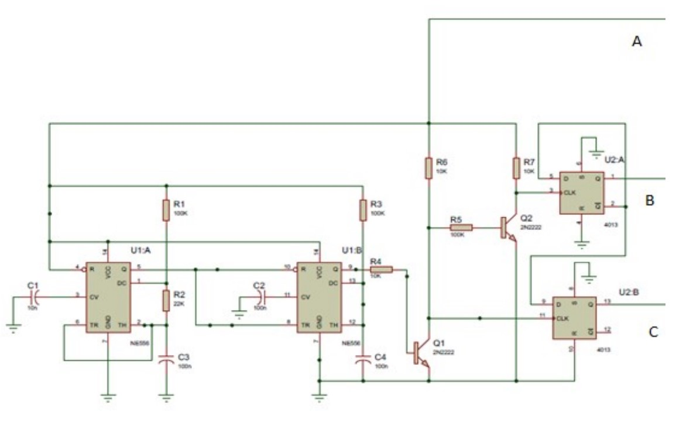

PROPUESTA DE ACTUALIZACION
Luego de analizar el funcionamiento del circuito integrado 4047, descubrimos que es un componente completo dedicado a tal fin. No existe un reemplazo directo, moderno de similares características. Se propone un circuito de reemplazo a fin de armar las etapas que componen el 4047 manteniendo gran parte del circuito original. Además el nuevo circuito presenta ajustes que mejoran la calidad del inversor.
Se realiza un oscilador astable con un circuito integrado 556 y un CD4013 dual Flip-Flop.
El circuito propuesto es el siguiente:
El circuito presentado puede generar una señal cuadrada al 50% o controlar el ancho del pulso para obtener mejoras en la señal de salida, como la eliminación de armónicos que distorsionan la señal de salida.
También se reemplazan los transistores BD239 y 2N3772 por transistores más comunes en el mercado. Según las características de cada uno.
Simulación
El Circuito armado en Proteus:
Se mantiene el circuito anterior en la mayoría de los componentes
Se observan las señales a las salidas Q de los módulos del CI 556 y las señales en los capacitores de cada uno.
Luego la señales a las salidas de los módulos del CI 4013 y la señal a la salida del transformador. Podemos Observar la composición de una señal cuadrada de 50Hz.
Como se mencionó anteriormente con este nuevo circuito se puede modificar el ciclo de actividad de la señal cuadra, logrando un pulso único de 60° con lo cual podemos eliminar los armónicos más fuertes como los terceros.
Se observan las señales a las salidas Q de los módulos del CI 556 y las señales en los capacitores de cada uno.
Luego la señales a las salidas de los módulos del CI 4013 y la señal a la salida del transformador. Podemos Observar la composición de una señal cuadrada de 50Hz de pulso único con B=60°.